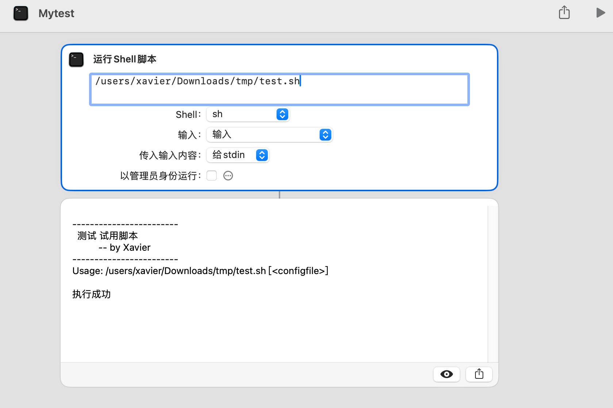
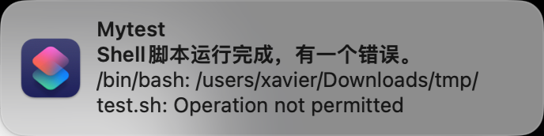

MacOS初识SIP
解决快捷指令sh脚本报错Operation not permitted
前言
因为一些原因，设计了一套快捷指令，中间涉及到一个sh脚本的运行，通过快捷指令运行时就会报错：operation not permitted
奇怪的是在快捷指令窗口下运行一切正常，但是从其他地方直接调用，例如通过Command+Space 打开Spotlight Search下执行就换出现报错。
以测试用快捷指令”Mytest“为例，快捷指令窗口下运行成功截图：
通过Spotlight Search运行Mytest失败截图：
接下去记录下整个排查过程。
省流：解决办法：换个目录，将脚本从系统目录移动到用户目录下。
|
|
文章目的：分享排查思路和过程、介绍SIP
Step 1：初步检查
遇到 “operation not permitted” 错误，这通常意味着系统安全设置或权限设置阻止了脚本的执行。
接下去进行了如下检查：
- 脚本内容：检查脚本内容，确保脚本中没有尝试执行需要更高权限的操作。没问题。
- sh脚本执行权限，
chmod 755 test.sh，具有可执行权限。没问题 - 系统偏好设置：打开“系统偏好设置” > “安全性与隐私” > “隐私”标签页，检查“完全磁盘访问”列表，给快捷指令应用或终端应用（terminal）访问磁盘上文件的权限。 没问题。
- Gatekeeper 设置：在“安全性与隐私” > “通用”标签页中，设置允许从“App Store 和被认同的开发者”或“任何来源”安装应用。没问题
- 管理员权限：尝试以管理员身份运行sh脚本。无影响，还是不行。
在我当前已有认知中所有可能的方法都不能解决问题，那么要尝试定位问题产生的原因。
Step 2：日志调查
这是一个超出我当前认知的一个问题，需要一步步排查定位问题，目前快捷指令给出的反馈.../test.sh: Operation not permitted太粗糙，需要找更精细的报错日志。
使用MacOS的 控制台应用（Console.app）以获取更多关于错误的详细信息。
又重复执行了一边快捷指令，使用Console.app抓取日志信息，然后通过搜索test.sh定位到详细的日志内容：

BackgroundShortcutRunner进程就是快捷指令app，注意到在它上面有一条kernel进程的报错信息，内容如下：
|
|
接下去就是搜索该报错信息是什么意思，怎么解决。
Step 3：定位问题
|
|
通过搜索得知，这个日志信息表明 macOS 的系统策略（很可能是 SIP，即 System Integrity Protection）阻止了 bash 进程（进程ID为1538）读取 /Users/xavier/Downloads/tmp/test.sh 文件数据。
问题就在这个SIP策略。当脚本位于受 SIP 保护的目录中，或者脚本试图执行被 SIP 保护的操作，就可能会遇到权限问题。
这次遇到的情况就是因为我们的脚本被放在了受SIP保护的目录中，因此解决办法非常简单。
在解决问题之前，我想先了解下SIP。
SIP是什么？
SIP ，即系统完整性保护（System Integrity Protection），是 macOS 的一个安全功能，用于保护系统文件和目录，防止这些文件及目录被没有特定权限的进程修改，包括root用户或拥有root权限的用户。
SIP通过一系列内核强制实施的机制来达成这一目标，它限制了关键系统文件的可写性，并对特定关键文件系统位置中的组件进行只读限制。
SIP的保护范围包括多个重要的系统目录和文件，例如/System、/usr、/bin、/sbin以及OSX的预装应用。这些目录和文件在系统启动时会被加载，并且对于保持系统的稳定性和安全性至关重要。SIP确保这些文件和目录不会被恶意代码或其他未经授权的进程修改。
Step 4：解决问题
之前说了这次遇到的问题就是因为我们的脚本被放在了受SIP保护的目录中，因此解决办法非常简单，只需要将脚本换个位置，放到用户目录下即可，SIP 通常不会阻止读取用户目录下的文件。
移动脚本到用户目录：
|
|
当然还有一种办法，就是禁用SIP，但是强烈不推荐，后果自负，我没试过
- 如果确定需要禁用 SIP 来运行脚本，请小心操作，因为这可能会降低系统的安全性。
- 在终端运行
sudo csrutil status检查 SIP 的状态， - 使用
sudo csrutil disable，禁用SIP（需要重启）。
总结
在排查问题过程中，要尽可能找细节全面的日志信息进行辅助判断。
写程序过程中也要注意报错信息处理，能帮助我们更快定位和解决问题。
（又水一篇文章~ 😆 ）